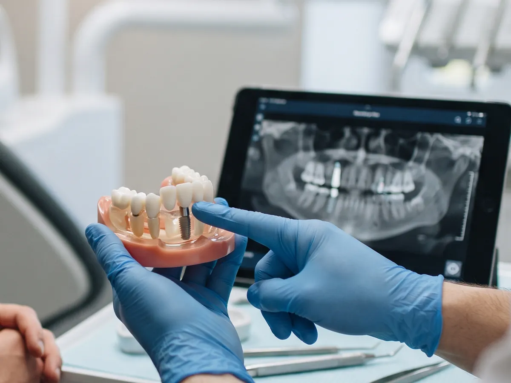
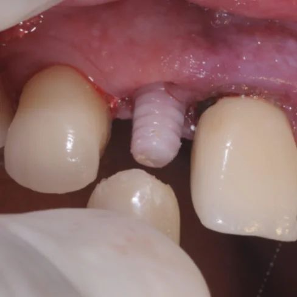

Implante dentário
Um dente fixo no lugar do que foi perdido
O implante é uma pequena peça de titânio colocada no osso, que faz o papel da raiz do dente. Sobre ele é fixada uma coroa com aparência natural, sem precisar desgastar os dentes vizinhos.
- Mastigação firme, sem nada solto na boca
- Ajuda a preservar o osso da região
- Pode repor um dente ou vários

